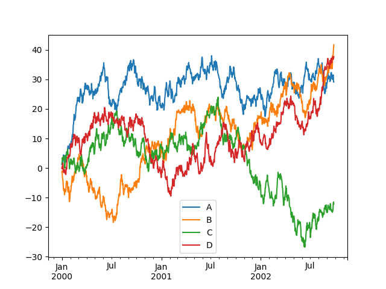

pandas: 数据处理包
Table of Contents
1 pandas
pandas 一个是 BSD 许可证下开源的 Python 包，它提供非常方便使用的数据结构和数据分 析工具。注意有以下几个优点：
- 使用 Series 表示一维数据，DataFrame 表示二维数据
- 支持对数据的多维度索引
- 可以导入和导出 csv，excel 等其他格式的文件数据
- 一些基本的统计功能（均值、方差、标准差等）
1.1 安装
安装详细教程见 here。使用 pip 安装命令如下：
pip install pandas
1.2 快速上手
1.2.1 导入
import pandas as pd import numpy as np import matplotlib import matplotlib.pyplot as plt
1.2.2 创建对象
sr = pd.Series([1,3,5,np.nan,6,8]) dates = pd.date_range('20130101', periods=6) df = pd.DataFrame(np.random.randn(6,4), index=dates, columns=list('ABCD'))
1.2.3 查看对象
df.head() df.tail(3) df.index df.columns df.values df.describe() df.T # transpose df.sort_index(axis=1, ascending=False) df.sort_values(by='B')
1.2.4 部分选取
# single column df['A'] # using [] df[0:3] df['20130102':'20130104'] # using label df.loc[dates[0]] df.loc[:,['A','B']] df.loc['20130102':'20130104',['A','B']] df.loc[dates[0],'A'] # using position df.iloc[3] df.iloc[3:5,0:2] df.iloc[[1,2,4],[0,2]] # using condition df[df.A > 0] df[df > 0] # assign s1 = pd.Series([1,2,3,4,5,6], index=pd.date_range('20130102', periods=6)) df['F'] = s1 df.loc[:,'D'] = np.array([5] * len(df)) df2 = df.copy() df2[df2 > 0] = -df2 # A where operation with assign
1.2.5 缺失数据
df1 = df.reindex(index=dates[0:4], columns=list(df.columns) + ['E']) df1.loc[dates[0]:dates[1],'E'] = 1 df1.dropna(how='any') df1.fillna(value=5) pd.isna(df1)
1.2.6 操作
df.mean() df.mean(1) s = pd.Series([1,3,5,np.nan,6,8], index=dates).shift(2) df.sub(s, axis='index') df.apply(np.cumsum) df.apply(lambda x: x.max() - x.min()) s = pd.Series(np.random.randint(0, 7, size=10)) s = pd.Series(['A', 'B', 'C', 'Aaba', 'Baca', np.nan, 'CABA', 'dog', 'cat']) s.str.lower()
1.2.7 合并
df = pd.DataFrame(np.random.randn(10, 4)) pieces = [df[:3], df[3:7], df[7:]] pd.concat(pieces) # join left = pd.DataFrame({'key': ['foo', 'foo'], 'lval': [1, 2]}) right = pd.DataFrame({'key': ['foo', 'foo'], 'rval': [4, 5]}) pd.merge(left, right, on='key') # append df = pd.DataFrame(np.random.randn(8, 4), columns=['A','B','C','D']) s = df.iloc[3] df.append(s, ignore_index=True)
1.2.8 分组
df = pd.DataFrame({'A': ['foo', 'bar', 'foo', 'bar', 'foo', 'bar', 'foo', 'foo'], 'B': ['one', 'one', 'two', 'three', 'two', 'two', 'one', 'three'], 'C': np.random.randn(8), 'D': np.random.randn(8)}) print(df) print(df.groupby('A').sum()) print(df.groupby(['A','B']).sum())
A B C D
0 foo one -1.699466 1.816580
1 bar one -1.076721 -0.175009
2 foo two 0.218883 -0.857612
3 bar three 0.000211 -0.100240
4 foo two 0.207557 0.332343
5 bar two 0.218925 0.253677
6 foo one 1.799058 0.784080
7 foo three 1.727525 1.112355
C D
A
bar -0.857585 -0.021572
foo 2.253557 3.187746
C D
A B
bar one -1.076721 -0.175009
three 0.000211 -0.100240
two 0.218925 0.253677
foo one 0.099592 2.600660
three 1.727525 1.112355
two 0.426440 -0.525269
1.2.9 分类
df = pd.DataFrame({"id":[1,2,3,4,5,6], "raw_grade":['a', 'b', 'b', 'a', 'a', 'e']}) df["grade"] = df["raw_grade"].astype("category") df["grade"].cat.categories = ["very good", "good", "very bad"] df["grade"] = df["grade"].cat.set_categories(["very bad", "bad", "medium", "good", "very good"]) df.sort_values(by="grade") df.groupby("grade").size()
1.2.10 绘图
import pandas as pd import numpy as np import matplotlib.pyplot as plt filename = '../resource/image/2018/10/pandas1.png' ts = pd.Series(np.random.randn(1000), index=pd.date_range('1/1/2000', periods=1000)) ts = ts.cumsum() ts.plot() df = pd.DataFrame(np.random.randn(1000, 4), index=ts.index, columns=['A', 'B', 'C', 'D']) df = df.cumsum() plt.figure(); df.plot(); plt.legend(loc='best') plt.savefig(filename) return filename

1.2.11 输入/输出
# csv df.to_csv('foo.csv') pd.read_csv('foo.csv') # hd5 df.to_hdf('foo.h5','df') pd.read_hdf('foo.h5','df') # excel df.to_excel('foo.xlsx', sheet_name='Sheet1') pd.read_excel('foo.xlsx', 'Sheet1', index_col=None, na_values=['NA'])